The World: An Overview of Our Planet
The world, known scientifically as Earth, is the third planet from the Sun and the only known celestial body to support life. With a history spanning approximately 4.5 billion years, Earth is home to diverse ecosystems, cultures, languages, and civilizations that together shape the global human experience.
Physical Geography
Earth`s surface is composed of about 71% water and 29% land. The largest ocean, the Pacific Ocean, covers more area than all the landmasses combined. The planet features a wide range of geographical formations, from vast deserts and dense rainforests to towering mountain ranges like Mount Everest, the highest point above sea level.
There are seven continents: (Click the continents to show images)
-
Africa
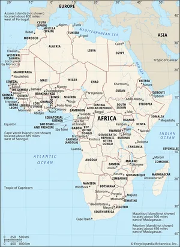 -
Antartica

-
Asia
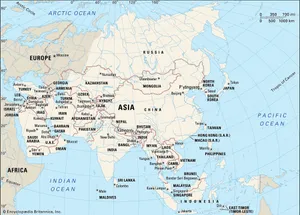 Europe
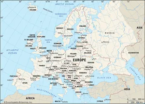-
North America
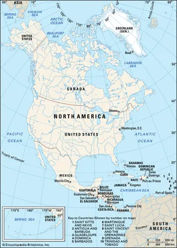 -
South America
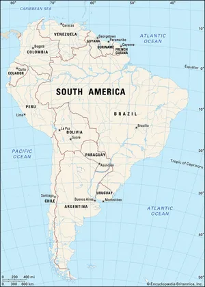 -
Australia

Each continent has unique climates, wildlife, and cultural histories.
Population and Cultures
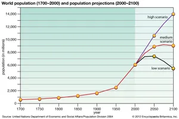The world`s population exceeds 8 billion people, representing thousands of ethnic groups and over 7,000 languages. Major religions—including Christianity, Islam, Hinduism, Buddhism, and others—play significant roles in shaping societies and traditions.
Cultural expressions such as art, music, literature, and cuisine vary widely across regions, reflecting historical developments and environmental influences.
Political and Economic Systems
The world is divided into nearly 200 independent countries, each with its own government and political system. International cooperation is often coordinated through organizations like the United Nations, which works to promote peace, security, and sustainable development.
Global economies are interconnected through trade, technology, and financial systems. Advances in transportation and communication have accelerated globalization, enabling rapid exchange of goods, services, and information.
Environment and Sustainability

Earth faces significant environmental challenges, including climate change, deforestation, pollution, and biodiversity loss. International efforts focus on sustainable development—balancing economic growth with environmental protection to ensure resources remain available for future generations.
Renewable energy sources such as solar, wind, and hydroelectric power are increasingly important in reducing reliance on fossil fuels.
Conclusion
The world is a dynamic and interconnected system of natural environments and human societies. Understanding its geography, cultures, and global challenges is essential for fostering cooperation and ensuring a sustainable future for all who call Earth home.
Continents

Africa

Overview:
Africa is the second-largest and second-most populous continent. It’s often called the “cradle of humanity,” as the earliest human fossils were found here.
Regions: North, West, East, Central, and Southern Africa.
Major countries: Nigeria, Egypt, Kenya, South Africa
People & Cultures:
- Over 1.4 billion people
- Thousands of ethnic groups and languages (e.g., Swahili, Hausa, Arabic, Zulu)
- Rich traditions in music, storytelling, art, and community life
- Religions: Christianity, Islam, and many traditional belief systems
Antartica
 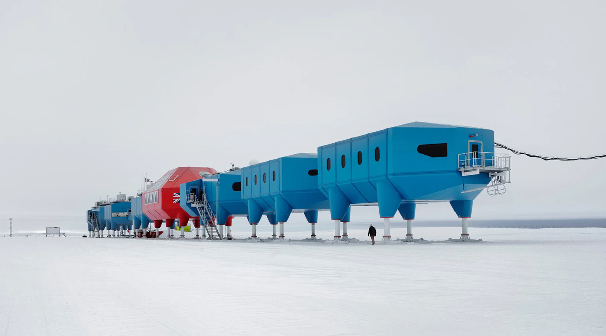
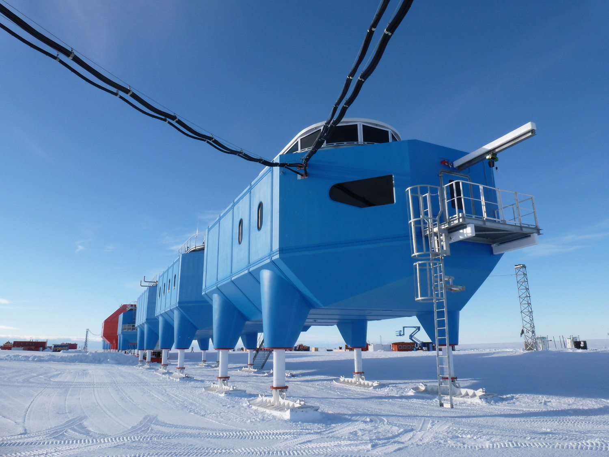
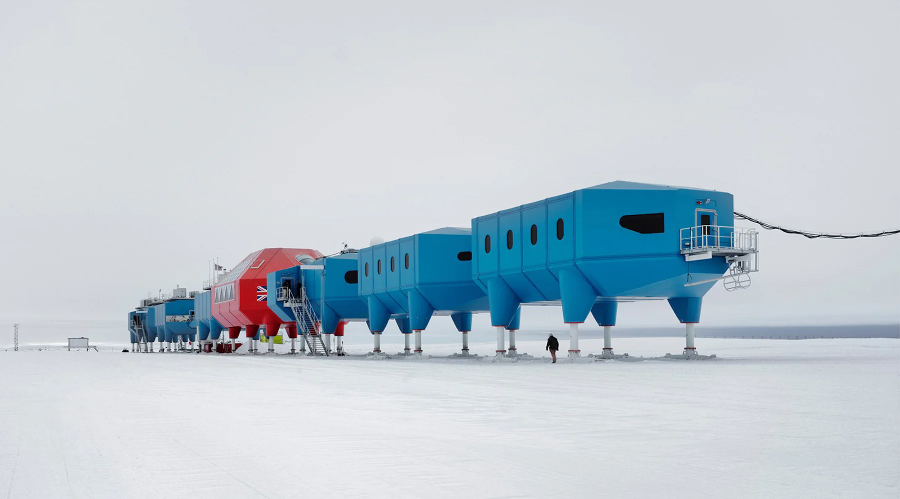
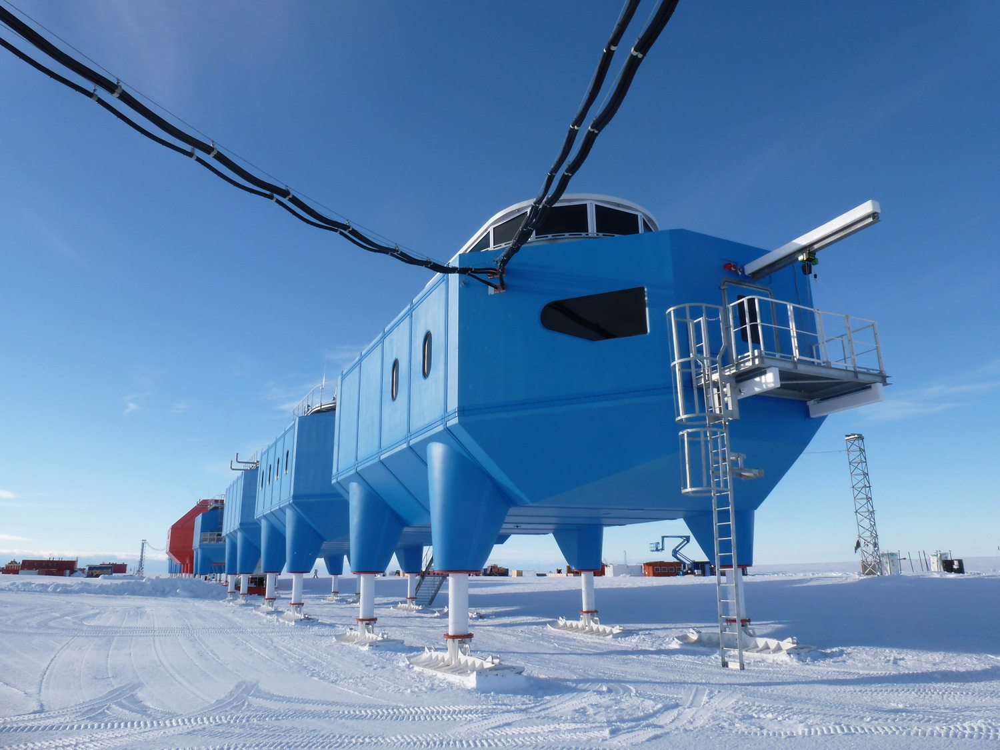
Overview:
The coldest and least populated continent.
Regions: East Asia, South Asia, Southeast Asia, Central Asia, West Asia (Middle East)
Major countries: China, India, Japan, Saudi Arabia
People:
- About 4.7+ billion people
- Birthplace of major religions: Hinduism, Buddhism, Islam
- Huge diversity in language, food, traditions, and technology
- From rural farming villages to ultra-modern megacities
Asia

Overview:
Asia is the largest and most populous continent.
People:
- No permanent residents
- 1,000-5,000 scientists and researchers seasonally
- Governed by international agreements (Antarctic Treaty)
Europe

Overview:
Europe is known for its historical influence on global politics, science, and art.
Major countries: Germany, France, United Kingdom, Italy
People:
- About 450+ million people
- Many languages (English, French, German, Spanish, etc.)
- Strong traditions in literature, philosophy, architecture
- Mostly urban population today
North America


Overview:
North America includes Canada, the United States, Mexico, and Central America (depending on definition).
Major countries: United States, Canada, Mexico
People:
- About 600 million people
- Highly diverse population (Indigenous peoples, immigrants from Europe, Africa, Asia, Latin America)
- Strong influence in entertainment, technology, and global politics
South America


Overview:
Known for rainforests, mountains, and vibrant cultures.
Major countries: Brazil, Argentina, Colombia, Peru
People:
- About 430+ million people
- Spanish and Portuguese widely spoken
- Mix of Indigenous, European, and African heritage
- Famous for music, dance (samba, tango), and football
Australia

 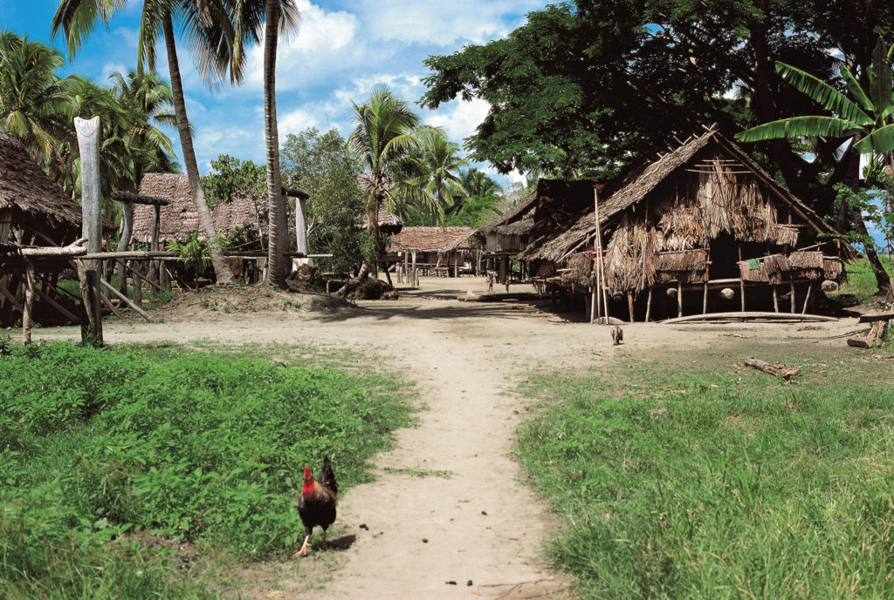
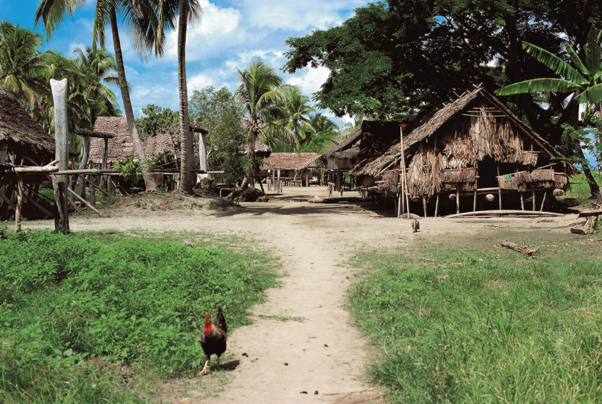
Overview:
Often called Oceania, this region includes Australia, New Zealand, and Pacific island nations.
Major countries: Australia, New Zealand, Fiji
People:
- About 45 million people
- Indigenous Australians and Māori of New Zealand
- Mix of Indigenous, European, and African heritage
- Many Pacific Islander cultures
- Blend of Western and Indigenous traditions